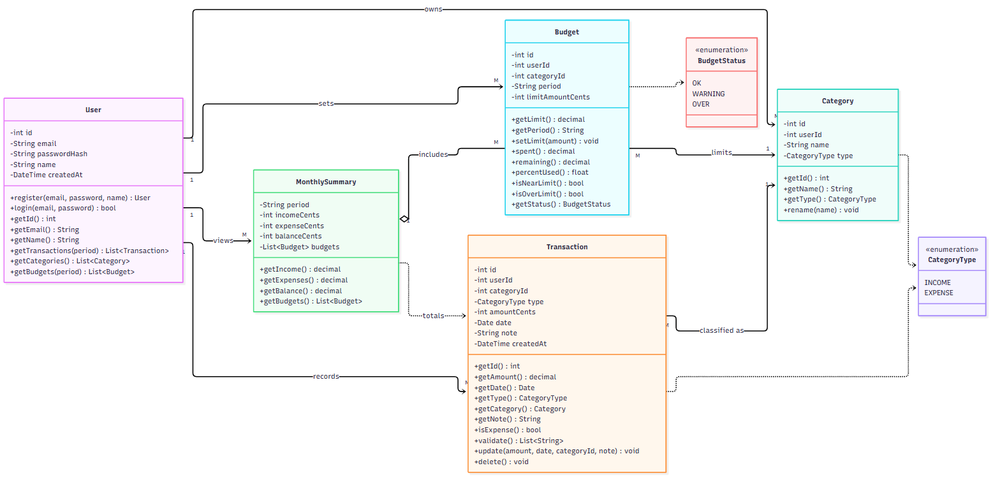
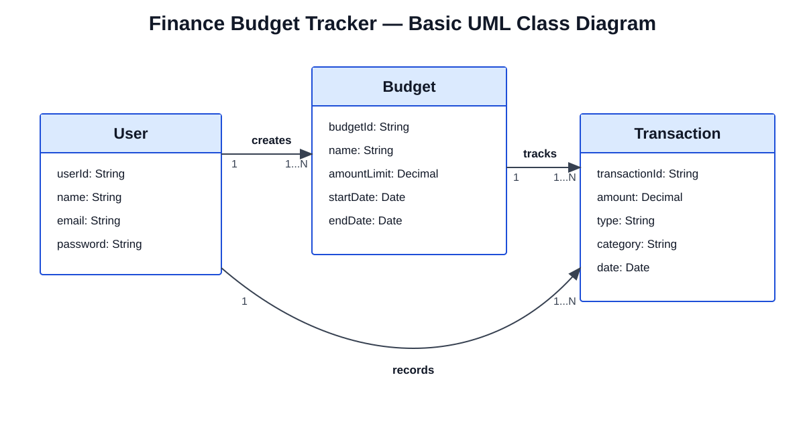
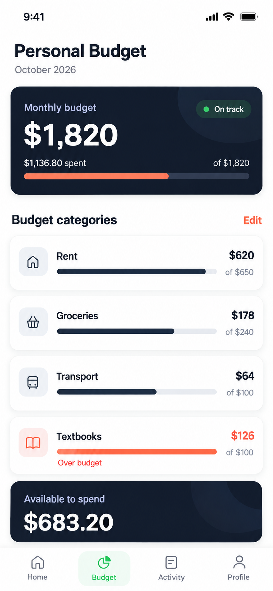
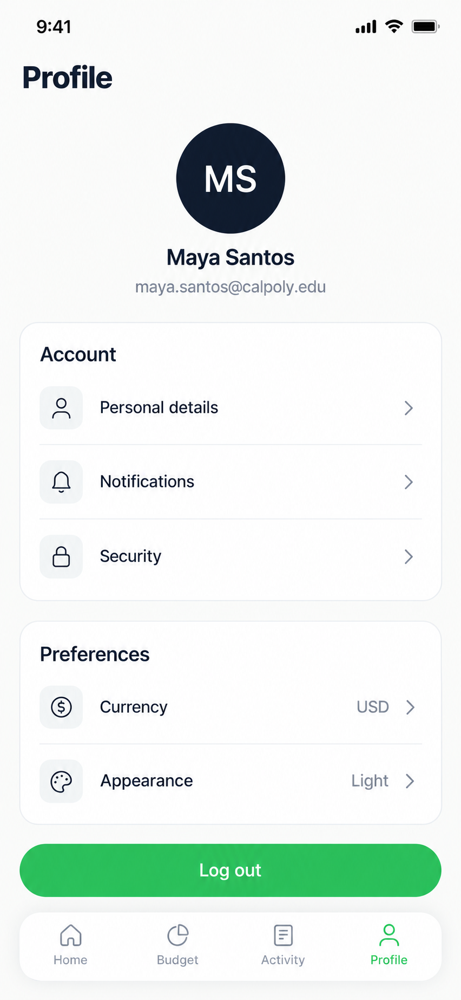

LedgerLogic (Finance Budget Tracker) · CSC 3100 · Fall 2026 · Team OpenAnthropic
| Team | Shreev B. (Lead Developer) · Juan S. (Scrum Master & PM) · Juan F. (Project Tester) |
| Repository | https://github.com/shreev2703/finance-budget-tracker |
| Date | October 16, 2026 |
LedgerLogic is a web app that helps college students log income and expenses, see their monthly balance, and stay under per-category spending limits, with a warning at 80% of a limit. This document contains all of our TE3 diagrams: the UML class diagram for our domain model, how each user story maps to the classes, our initial UML sketch, and our UI mockups.

docs/diagram-sources/te3/class-diagram.mmd.| Class | Responsibility | Stories |
|---|---|---|
| User | A registered student who owns all of their data, so records stay private. register(), login(). | US-01, US-02, US-07 |
| Category | A user-defined bucket such as "Groceries" or "Part-time Job". type says whether it holds income or expenses. | US-01, US-02, US-05, US-06, US-08 |
| Transaction | One income or expense entry with amount, date, category, and note. | US-01 – US-06 |
| Budget | A monthly spending limit for one expense category (period = YYYY-MM). Derives spent, remaining, percent used, near limit (≥ 80%), and over limit. | US-08, US-09 |
| CategoryType | Enumeration: INCOME or EXPENSE. | US-01, US-02 |
Design notes. Money is decimal in the model and stored as integer cents in the database. A user has at most one budget per category per month. Dashboard totals (US-04) and the spending-by-category chart (US-05) are computed from Transactions rather than stored, and filtering (US-06) is a query, not a class. A SavingsGoal class was considered and left out because no TE2 story requires it.
| Story | Summary | Classes | Attributes / methods |
|---|---|---|---|
| US-01 | Log an expense with amount, date, category, description | Transaction, Category, User | Transaction.amount, .date, .note, .type = EXPENSE; Transaction → Category |
| US-02 | Record paychecks and income sources | Transaction, Category, User | Transaction.type = INCOME; income categories |
| US-03 | Edit or delete a past transaction | Transaction | Transaction.id; update/delete |
| US-04 | Dashboard: income, expenses, remaining balance | Transaction | Derived: sum of amount by type for the month |
| US-05 | Spending-by-category chart | Transaction, Category | Derived: expense amount grouped by Category |
| US-06 | Filter history by category and date range | Transaction, Category | Query on Transaction.date and Category |
| US-07 | Create an account and log in | User | User.email, .passwordHash, register(), login() |
| US-08 | Monthly spending limit per category | Budget, Category | Budget.limitAmount, .period; remaining(), isOverLimit() |
| US-09 | Warning at 80% of a category limit | Budget | percentUsed(), isNearLimit() |


